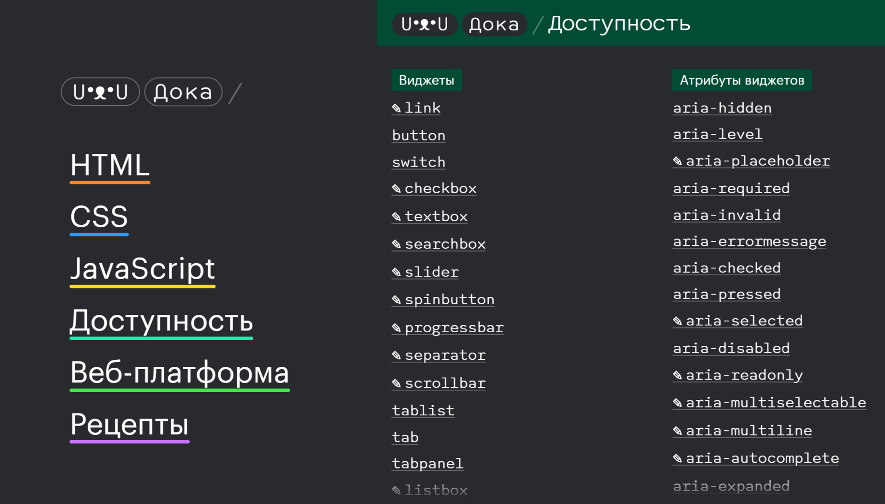
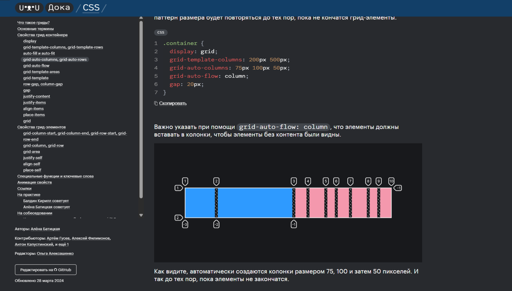
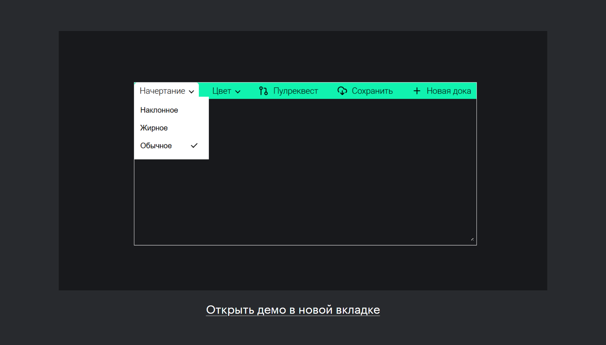
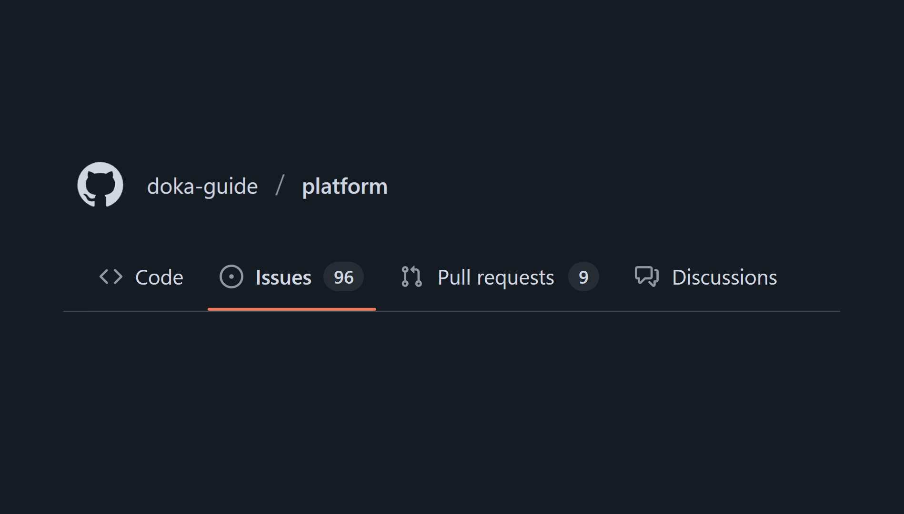
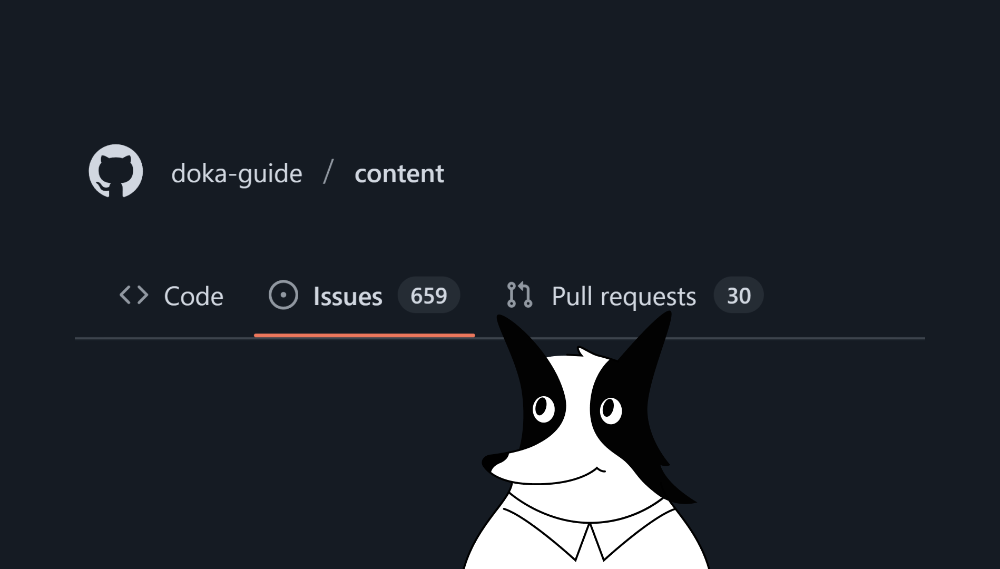

The Doka Guide
The Doka Guide
The Doka Guide?
It's a
community-driven
documentation resource
It has a
friendly
and
welcoming
atmosphere
It's a place where you can learn, share, and help developers grow together.



Why I should help?
You help other developers and the entire community 🥰
You learn a lot and revisit a technical documentation 🤓
Three of our team members/contributors have moved to London, so… 😎
It's simply fun 🤪
How can I help?
Write
large articles or small texts, which we call 'doka'
Create and improve
code demos
Enhance
the quality of existing materials
Fix
bugs and develop new features for the platform
Help
to review others' pull requests
Guides's anatomy
Two main GitHub repositories:
Platform
and
Content
🫀
The Content repository contains articles, while the Platform repository hosts the website itself
Other repositories include Search for the website's search API, and API for the backend.
We have a
big
platform backlog 🌌

And our content backlog is
huge
. I mean it!


How to start
Find a favourite issue
: Choose an issue from the project's issue tracker that interests you the most
Fork the repository with content
: Create a personal copy of the repository
Write your first text
: After forking the repository, you can start writing or editing content
Create a pull Rrequest
: Once your material is ready, you submit a pull request. Editors will help you to improve your article.
Links
Doka
GitHub
Our style and other guides